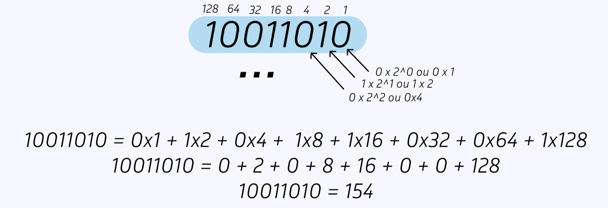

Bases Numéricas
Introdução
Uma Base Numérica representa a quantidade de símbolos/algarismos que podem ser utilizados para representar um determinado valor:
Exemplos
Números Binários
só pode se utilizar de dois algarismos para representar qualquer número
sendo eles: 0 e 1
Números Octais
só pode se utilizar de 8 algarismos para representar qualquer número
sendo eles: 0, 1, 2, 3, 4, 5, 6, 7
Números Hexadecimais
pode se utilizar de 16 algarismos/símbolos para representar qualquer número
sendo eles: 0, 1, 2, 3, 4, 5, 6, 7, 8, 9, A, B, C, D, F
Sistema Binario
O sistema numérico binário é a base da computação moderna. Diferente do sistema decimal, que usamos no dia a dia e tem 10 dígitos (de 0 a 9), o sistema binário utiliza apenas dois números: 0 e 1. Esses dois dígitos, chamados bits, são a linguagem fundamental dos computadores. Cada operação que um computador realiza, desde cálculos complexos até a exibição de uma página na internet, é interpretada através de uma sequência de 0s e 1s. Compreender o sistema binário é essencial para entender como as máquinas processam dados e executam tarefas.
Oranização Binária
Bit
BInary digiT - Digito binário (0 ou 1) - elemento base do sistema
11110000
Byte
conjunto de 8 Bits tendo 255 possibilidades de representação de diferentes numeros
11110000
Conversões
Binário > Decimal
A representação dos números binários é feita de maneira posicional, onde o primeiro algarismo equivale a X(0 ou 1) vezes 2^0, o segundo X(0 ou 1) vezes 2^1, o terceiro X(0 ou 1) vezes 2^2 e assim por diante.
Decimal > Binário
A conversão inversa, do número decimal para o número binário pode ser feita utilizando a técnica de divisões sucessivas, que consiste em dividir o número por dois até que não seja mais possível dividir o dividendo por dois, então o valor do último quociente é o primeiro (bit mais significativo (MSB)) bit, e os restos das divisões são os seguintes, como no exemplo:
Sinalização em Binários
Para números binários com sinalizção (negativos e positivos) existem duas maneiras de representação mais conhecidas que são:
Sinal e Magnetude
Complemento de 2
Sinal e Magnetude (S&M)
No metódo de sinal e magnetude o bit mais significativo representa o sinal do número ao invés de representar um valor, onde caso seja 1 o número é negativo e caso seja 0, é positivo.
Complemento de dois (C2)
No metódo de complemento de dois, o bit mais significativo representa o próprio valor, porém negativo.
Conversão Positivo <> Negativo em Complemento de dois (C2)
Para converter um número negativo para positivo, e vice-versa, é necessário saber como funciona a soma de números binários, então se você não sabe Clique Aqui para ir para o setor de operações e depois volte para entender a conversão (só e necessário saber a soma).
Para fazer está conversão basta fazer o “complemento de 1” do número, ou seja, inverter o binário (onde é 1 vira 0 e onde é 0 vira 1) e depois somar um ao resultado.
Extenção de Bits
A extenção de bits, nada mais é, que aumentar ou diminuir os bits de um número sem alterar o valor que o número representa.
Soma e Magnetude
No caso da soma e magnetude basta adcionar zeros atrás do primeiro bit, mantendo assim, o sinal do número.

Complemento de 2
Já no caso do complemento de dois, é estendido o primeiro bit do número, como no exemplo:

Operações
Adição e Subtração
A estrutura da conta de números binários é parecida com a dos números decimais, porém só existem 4 situações possíveis em cada etapa da conta, situações essas exemplificadas nos cards abaixo:
Regras Adição
0 + 0 = 0
Assim como qualquer outra base númerica, nos binários 0 + 0 e igual a 0 pois representm a ausência de valor
0 + 1 = 1
1 + 0 = 1
Nesse caso, tabém semelhante a outras bases numéricas, 1 + 0 ou vice versa resulta em um
1 + 1 = 0 + carry bit
No caso do 1+1, o reultado seria 0 porém seria adcionado um “vai um” ou carry bit em cima do próximo bit para somar com ele.
1 + 1 + 1 = 1 + carry bit
Quando ouver uma soma de 1 + 1 com um carry bit em cima fechando 1 + 1 + 1, o resultado será um e será adcionado um carry bit à próxima soma.